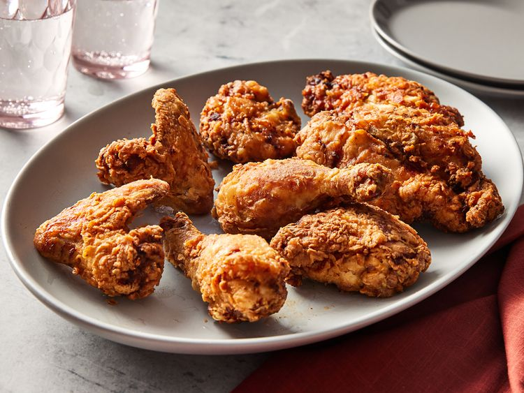

Fried Chicken

Description
Buttermilk fried chicken that's incredibly tender,
thanks to tangy buttermilk. After the buttermilk soak,
dredge the chicken pieces in seasoned flour and fry
them in hot oil until crisp and golden.
Ingredients
For the chicken:
- Whole chicken
-
Seasonings(black pepper, salt, paprika,
white pepper, dried rosemary, ground thyme,
dried oregano, dried sage, and cayenne pepper)
- Buttermilk
For the seasoned flour:
- All-purpose flour
- Salt
- Paprika
- Cayenne pepper
- Garlic powder
- White pepper
- Onion powder
Steps
-
Toss the chicken pieces in seasonings,
then marinate in buttermilk overnight.
- Make the seasoned flour.
-
Dredge each buttermilk-soaked chicken piece in
flour and transfer to a plate.
-
Fry the chicken until an instant read thermometer
reads 165 degrees F.
-
Drain on a cooling rack over a paper towel-lined
baking sheet.